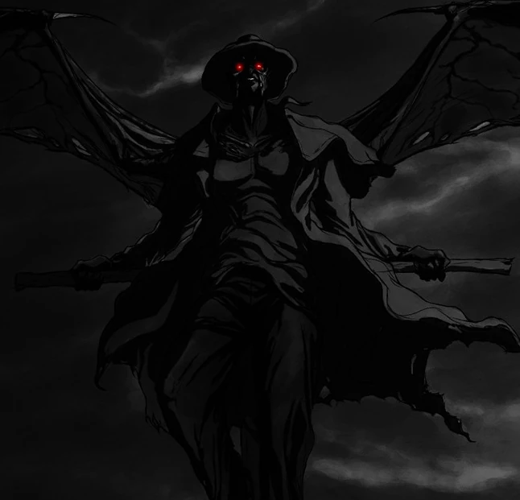

Mitologia Brasileira
Essa lenda que é muito conhecida no Nordeste do Brasil, conta a história de um homem que possui hábitos noturnos, além de usar uma roupa de couro preto como um cangaceiro, sendo que esta vestimenta fede à sangria. O Encourado gosta de se alimentar tanto de Seres Humanos, quanto de Animais.
Dizem que ele só entra nas casas em que for convidado, no entanto, sempre dá um jeito de receber as boas graças do anfitrião. As lendas também contam que ele possui preferência por pessoas que não frequentam a igreja, além do que ele sabe de antemão quem são estas pessoas, sendo assim, ao chegar num povoado, ele já tem em mente quem primeiro procurar.

Ao pressentir a presença do Encourado, os moradores costumam sacrificar algum animal, pois acreditam que feito isso ele irá embora. Conta-se que no passado haviam sacrifícios de pessoas indesejáveis, como criminosos e até mesmo de crianças. Entretanto, diz-se que basta simplesmente oferecer uma galinha preta ou um galo vermelho para afugentá-lo sem contudo ofendê-lo. A oferenda, no entanto, deve ser pendurada na entrada principal da cidade, pois o Encourado só entra pela porta da frente.